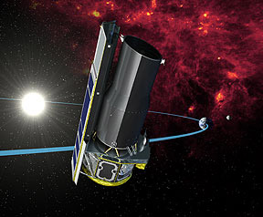
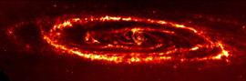

Spitzer Space Telescope
|  |
Launched on 25 August 2003 for a designed mission time of 2.5 years, the Spitzer Space Telescope was designed to obtain images and spectra by detecting the infrared energy between wavelengths of 3 and 180 microns. Most of this infrared radiation is blocked by the Earth's atmosphere and cannot be observed from the ground. |
Consisting of a 0.85-meter telescope and three cryogenically-cooled science instruments, Spitzer is the largest infrared telescope ever launched into space. It is designed to explore regions of space which are hidden from optical telescopes. Many areas of space are filled with vast, dense clouds of gas and dust which block our view. Infrared light, however can penetrate these clouds, allowing us to observe regions of star formation, the centers of galaxies, and newly forming planetary systems. Infrared also brings us information about the cooler objects in space, such as smaller stars which are too dim to be detected by their visible light, extrasolar planets, and giant molecular clouds. Also, many molecules in space, including organic molecules, have their unique signatures in the infrared.
|
Spitzer made an observation of the Andromeda galaxy and detected evidence in the infrared image that the smaller galaxy M32 had in fact collided with Andromeda in the past.
|

|
|
Index
Spitzer Space Telescope
Solar System Concepts |